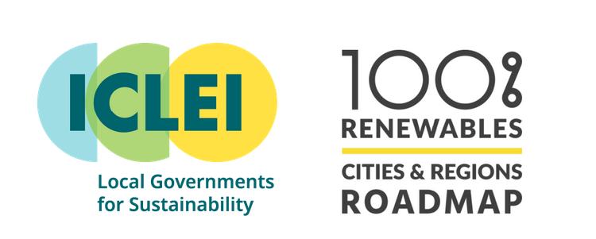

Introduction
In 1990, cities accounted for 45% of global final energy use, but by the end of 2020 this share had risen to approximately 75% and cities release a similar share of global energy-related CO₂ emissions. Today, most of the world’s energy supply is generated from fossil fuels, coal, oil, and natural gas. Fossil fuels are non-renewable sources of energy, and their use has a negative impact on the world’s economy, ecology, and climate [1]. Therefore, the use and need of renewable energy resources such as solar energy, is increasing and becoming more possible due to the rapid development of relevant technologies and scientific knowledge [2][3][4][5][6].
This guide introduces a step by step approach to map rooftop solar potential in a city. The guide is intended for the use of city planners, infrastructure managers and city data analysts. With the outputs of this guide, decision makers can make informed decisions to advance the implementation of sustainable and renewable energy solutions in their city.
Motivation behind the guide

ICLEI - Local Governments for Sustainability works with cities and local governments to:
- Provide guidance on how to define a 100% renewable energy roadmap, by making available methodologies, tools and other resources
- Model and assess local renewable energy potential for developing renewable energy and energy efficiency projects
Information and data are key factors in enabling better decision making for implementing renewable energies in cities. Geographic information systems (GIS) within urban energy analysis and planning allows for the capture, storage, and display of detailed information [4]. GIS has proven its effectiveness in assessing renewable energy generation potential and understanding the spatial dimensions of energy consumption within a city [4]. Moreover, there is a growing distribution of open geographical data and open-source geospatial software [7]. Open standards are a central element to increase interoperability, reducing costs of data and software tools, and creating equal opportunities for cities worldwide to address geospatial phenomena [7].
Not all cities are aware of the robust open geographical data and open-source geospatial software, hence, this technical guide can support a successful estimation of solar rooftop potential in city buildings, and enable reproducibility for other cities.
Structure of the guide
Chapter ?? introduces the concept of open source, and explains which software and data is needed to use this guide. Chapter ?? and ?? describe the main steps for mapping building electricity consumption and calculating the renewable electricity potential of each rooftop. Both chapters provide a thorough explanation on how to use the available software and data. Chapter ?? introduces to the user what is sampling and demonstrates and compares between two different sampling methods to estimate the renewable electricity potential for the whole city. Chapter ?? includes the final outputs after completing this guide.
Guide outputs
| The following table describes the outputs after completing this guide: |
|---|
| 1. Annual map and analysis of government operated buildings electricity consumption |
| 2. Annual map and analysis of solar radiation of government operated building rooftops |
| 3. Annual map of renewable electricity production potential for government operated buildings |
| 4. A number and range of estimation for the solar based renewable electricity rooftop potential of the whole city |
Acknowledgments
I would like to especially thank Mr. Cesar Carreño and Prof. Dr. Edzer Pebesma that supervised, supported, encouraged, and gave guidance while creating and writing this technical guide.
Thank you to Laura Noriega for connecting me with the ICLEI SAMS and Argentina teams - Felipe Gaudereto, Thiago Borges David, Victoria Colombo, Sofía Font, Carolina Mesa, Marco A. Massacesi, and Raisa Soares. This connection enabled collaborative meetings with city representatives from Rosario and La Plata for the purpose of data collection, and feedback which will assist in the future cities worldwide to implement renewable energy targets.